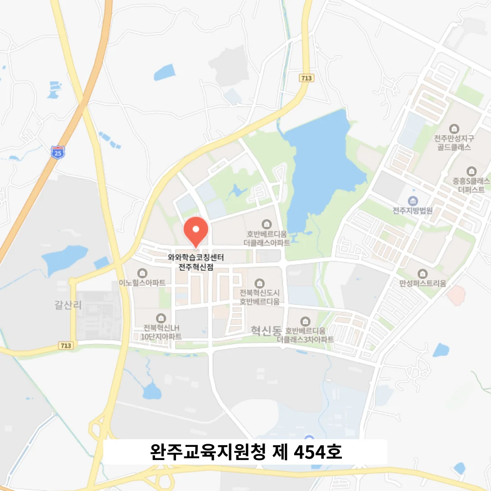

혁신동 예비중1 국어학원
혁신동 예비중1 국어학원
특히 고등학교 진학 초기처럼 환경이 급격히 변화하는 시기에 학생들은 외부 자극에 쉽게 흔들리고 자기 효능감이 저하되기 쉬운데, 이 시점에서 자신만의 정리 스타일을 발견하고 주간 복습 루틴을 체계화하는 것은 단순한 습관 그 이상의 의미를 갖는다. 스스로 예상 질문 리스트를 작성하는 습관은 시험 준비뿐 아니라 학문적 탐구의 기본 자세를 기르는 데에도 도움이 됩니다. 개념 확장 질문에 대한 사고력 확인은 중요합니다. 전문가로서는 학생이 스스로 선택한 학습 전략을 지속적으로 모니터링하고, 필요 시 맞춤형 피드백을 제공함으로써 학습 효율을 극대화하도록 독려한다. 서술형 개념 작성 훈련을 통해서는 문장 구성 능력과 논리 전개력을 동시에 강화한다. 학습 과정에서 막히는 부분이 생기면 즉시 교재 속 해당 개념을 찾아보는 행동은 의존성이 아니라 자기 해석력의 시작이다. 틀린 부분은 즉시 정정하기보다, 체크만 하고 일정 시간 동안 그대로 두는 전략을 사용하면, 시간이 지난 후 되돌아볼 때 헷갈렸던 이유를 더욱 생생하게 기억하게 되고, 마치 탐정이 단서를 모으듯 자신의 오답을 분석하는 태도를 기를 수 있다.